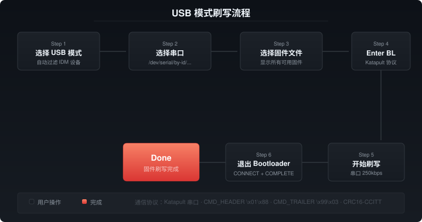

USB Mode Flashing
USB mode communicates with devices via serial port, suitable for IDM sensors connected via USB serial.
Serial Port Selection
- Serial Port: Select the device's regular serial port (e.g.,
/dev/serial/by-id/usb-IDM_*) - Bootloader Serial: The serial port after the device enters bootloader. If already in BL mode, fill in this field directly
Device list is automatically filtered to show only devices containing "IDM".
Firmware Selection
All available firmware files are shown in USB mode without frequency filtering.
Enter/Exit Bootloader
- Enter BL: Sends KLIPPER_REBOOT_CMD via Katapult serial protocol
- Exit BL: Uses prime + CONNECT + COMPLETE sequence without relying on DTR toggle
Auto-Detect Bootloader
Click "Detect BL" to automatically scan for bootloader devices:
- If the current port is already a BL device (name contains katapult/canboot), confirm directly
- Otherwise scan /dev/serial/by-id/ and /dev/ttyUSB, /dev/ttyACM*
If the device is already in bootloader mode, filling in the boot-serial field can skip detection and flash directly.

Flashing Procedure
- Select USB mode
- Select serial port (or fill in bootloader serial)
- Select firmware type, version, and file
- If not in bootloader mode, click "Enter BL"
- Click "Start Flashing"